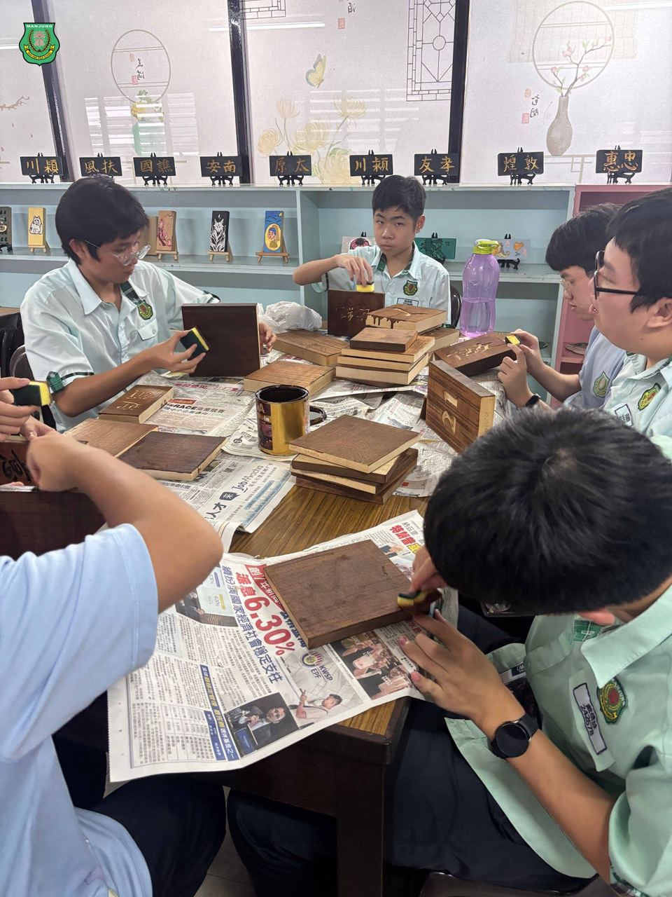
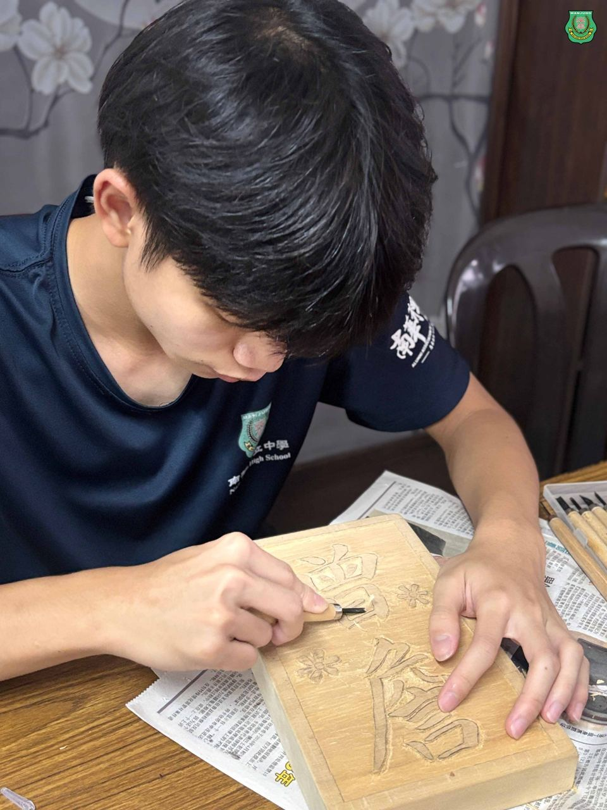
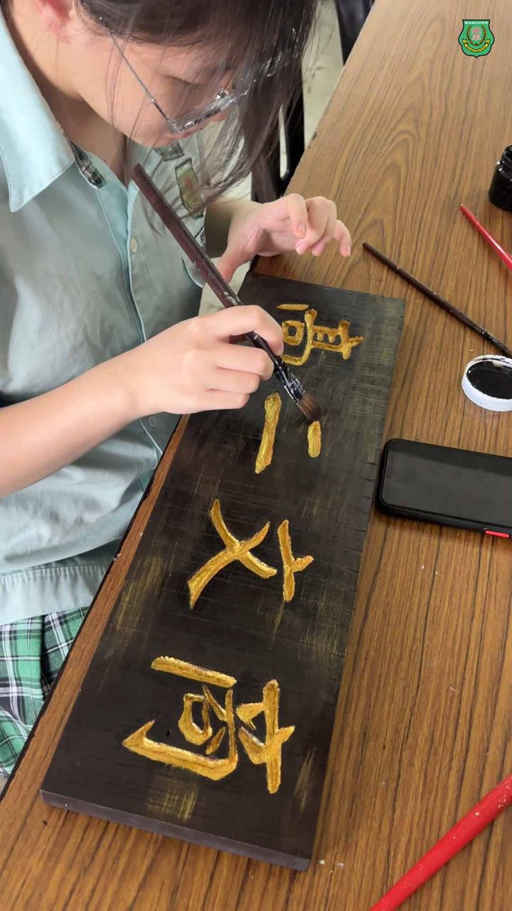
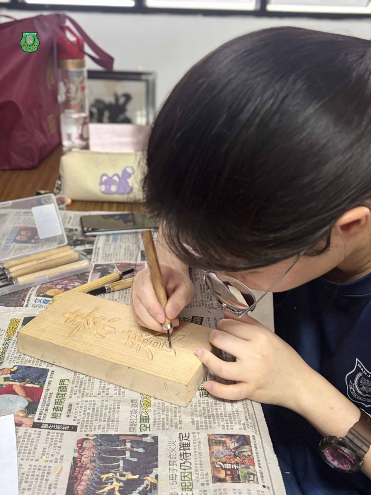
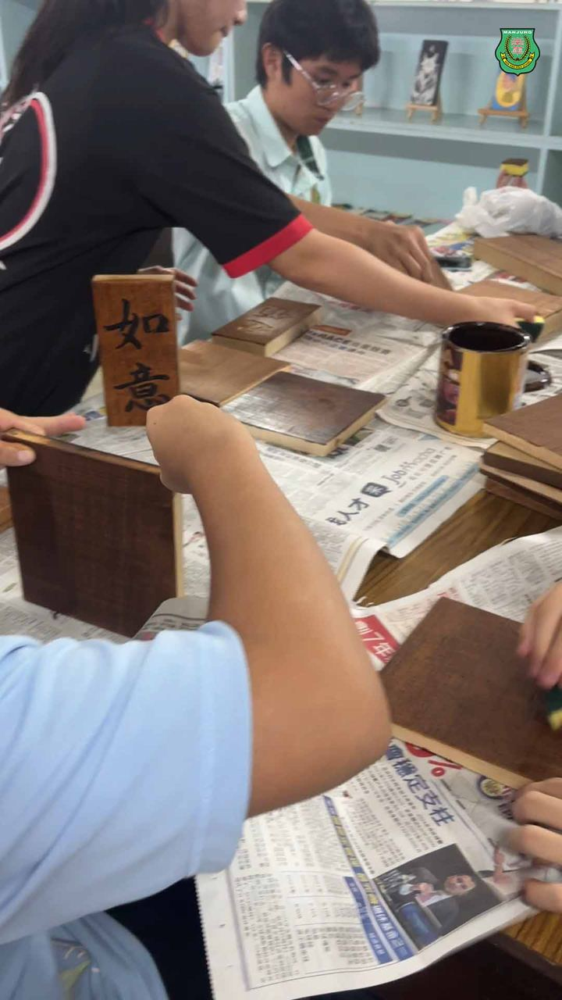
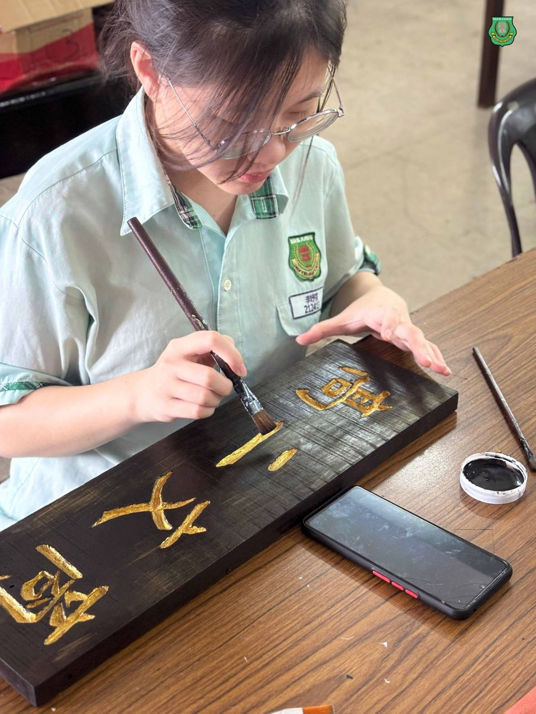
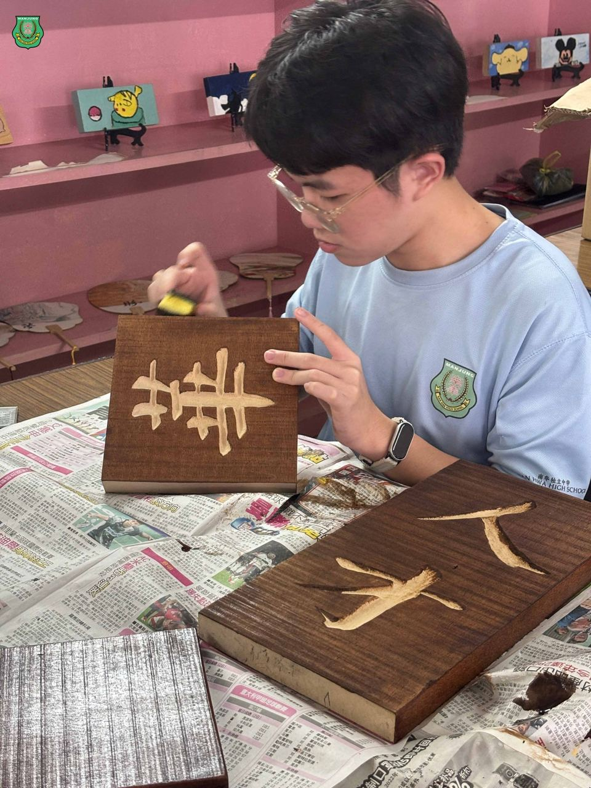
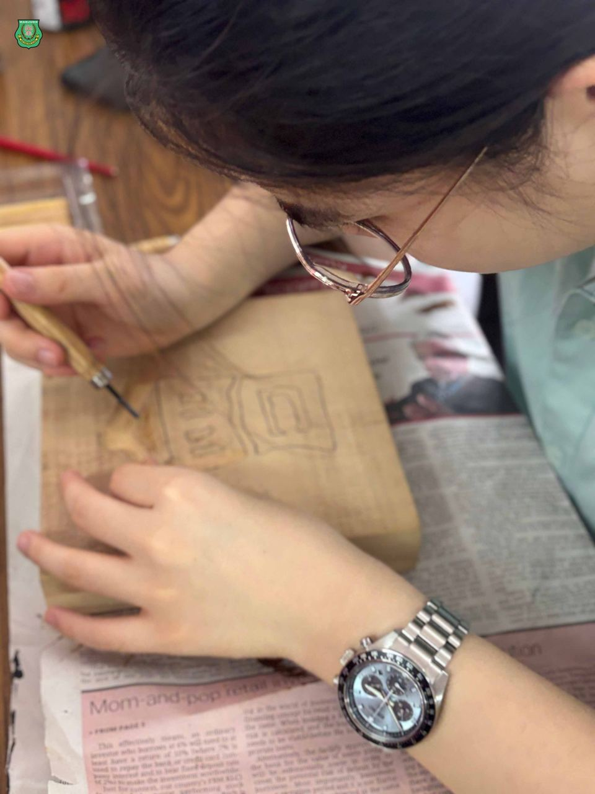

🪵南华独中选修课·书画刻🪵
🪵南华独中选修课·书画刻🪵
#入木三分 @ #刻出精彩
在南华独中选修课《书画刻》里，学生们的“作业”可不只是纸笔作画，而是从木刻到上色，把一块块木料变成有故事的艺术品。
这堂课的主题是“书刻”。在何欣霓老师的指导下，从木刻到上色，同学逐步掌握书刻技巧，不仅学会了用笔刷、海绵处理上光油后的木面“扎手”问题，还掌握了如何将颜料与漆均匀涂进木刻的凹槽，让作品色泽细腻、层次分明。一刀一刻都是温度与细腻的打磨，一笔一划尽显学生觉醒的匠魂。
有的同学正专注雕刻线条，有的在给作品补色，有的则小心翼翼地上漆——不同进度，不同挑战，却同样专注。更妙的是，大家还学会了处理色差、补救涂色失误等“救场”技巧，毕竟艺术创作嘛，容得下意外，也需要解决意外的智慧。
🎨 每一刀、每一抹颜色，都是耐心与巧思的结晶。
等到成品完成，那可不只是木板，
而是一段段刻在青春里的手作回忆。
这便是南华独中选修课其中一抹靓丽的风景。







